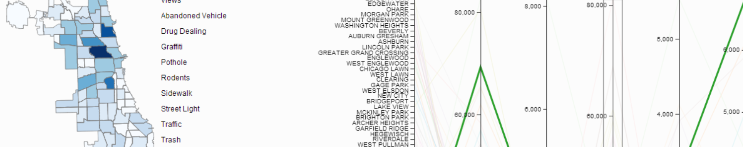

For anyone not familiar with Kaggle they run data mining competitions where individuals or teams grab a dataset and try to extract some sort of intelligence or relationship from it. They've recently been running a competition called See Click Predict Fix which provides data from 311. For those of you who don't know what 311 is, well:
311 is a mechanism by which citizens can express their desire to solve a problem the city or government by submitting a description of what needs to be done, fixed, or changed.
So the the public are able to log issues directly with the government and they can see what's being done about it. As this is service is offered online it provides a fantastic source of data. A dataset of over 200,000 records was provided and each record had a summary and a description as well as a tag that categorised the issue. Other information such as number of views, votes and comments together with the date created, the source of the query (android, iPhone, web, etc.), time of the query and importantly the location. Having the location opened up all sorts of possibilities for analysis and for the visualisation of the data.
With the location data it was had to go past a map, but it wasn't going to be possible to visualise all of the 200,000 points so some form of aggregation was required. The data was also available for 4 cities: Chicago; Oakland; Richmond; and New Haven as shown below in the map below using the wonderful Leaflet library.
The information in the map (the red dots) is a random sample of 5,000 from the original dataset. If you zoom in on any of the clusters you can see the amount of detail.The 4 cities were purposely spread across the US by the competition organisers. Given the geographic spread (continental scale) and the amount of detail in the dataset (city scale) it wasn't going to be possible difficult to display in any meaningful information for all them all on a single map. So for this visualisation I focused on Chicago at it had the most data. I also decided to examined the link between demographics and the type of issue. Of course the public level of interest was also investigated in terms of votes and views. In addition to the data supplied by Kaggle, demographic and GIS data was sourced from the City of Chicago's web site. The demographic data used in the analysis included:
The data for Chicago was extracted using QGIS, the open source GIS software and the data was aggregated based on Census counting areas. This resulted in 77 separate geographically based communities shown to the right.
However, the data was pretty raw and required some cleaning so I used the wonderful OpenRefine tool to help reduce the missing fields and increase the data available for analysis. Even after this cleaning some of the issues weren't very well represented the following 10 issues were retained for analysis in addition to votes and views:
So, the aim was to see if there was any relationship between the geographic and demographic data and the issues, that is, could any conclusions be drawn about which issues would be most popular based on the geographic and demographic data.
In many ways the obvious choice for this dataset was to create Choropleth maps. However, it became evident that a series of maps wouldn't be the best way to investigate this dataset. With a series of maps it would be difficult see relationships between maps unless they are all plotted on the same page and also it would be difficult to keep track of all the different colour scale. As the purpose of the visualisation was to see the relationships between geography/demographics and the issues a series of choropleth maps wasn't going to be the best technique.
I also investigated using Parallel Coordinates to visualise relationships the but question then became what to visualise. Visualising all the issues (10), the demographic data (4), the votes and views across the 77 areas would have resulted in 17 axis's on the Parallel Coordinates plot and again the visualisation wouldn't clearly communicating relationships.
In the end I decided that combining the choropleth maps with parallel coordinates would be the clearest way to see relationships. I created 2 choropleth maps, one for the issues and another for the demographics and these were linked to a parallel coordinates plot of the votes, views and demographics. This allows users to explore the geographic distributions of issues as well as potential predictors.
The final visualistion can be seen here or you can click the image below.
